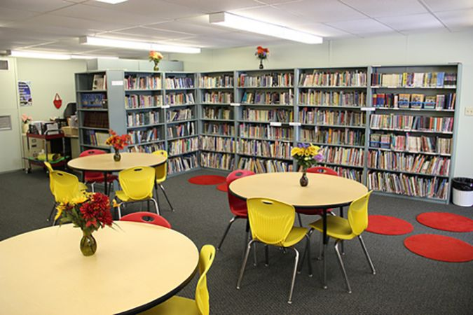

Campus Life

School Church
Was established in 1978
This church has lots of faithfulness and a big heart. The pastors have genuine care for their students. Along with strong Loyalty

School Library
Was built in 1980
This library has more books than you can imagine! Every genre and has lots of variety. You can never get bored of reading in this library! It also has guides for all subjects!

School Auditorium
Was built in 1982
This auditorium has extremely comfortable chairs. Along with a 4k TV for videos. It also has a stage for people to perform.